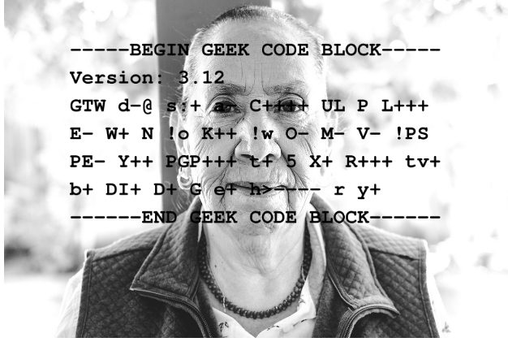
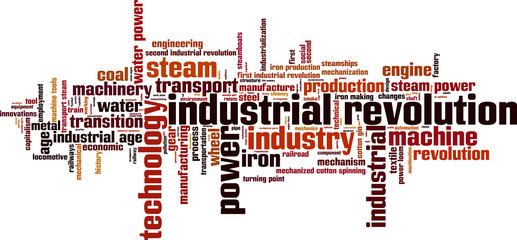

There’s a wealth of information all around us that we can learn from hearing the stories of others. We can hear this from folks in our families, in our communities, and at our institutions.
In 2018, we can do amazing things with our technology – cars run on electricity; we can manipulate genetic material; we can have real-time video conversations with people in the world’s most remote regions. But we didn’t just arrive at all of this new and dynamic technology. The Industrial Revolution of the 18th-19th Centuries laid the foundation for the luxuries that we enjoy today.